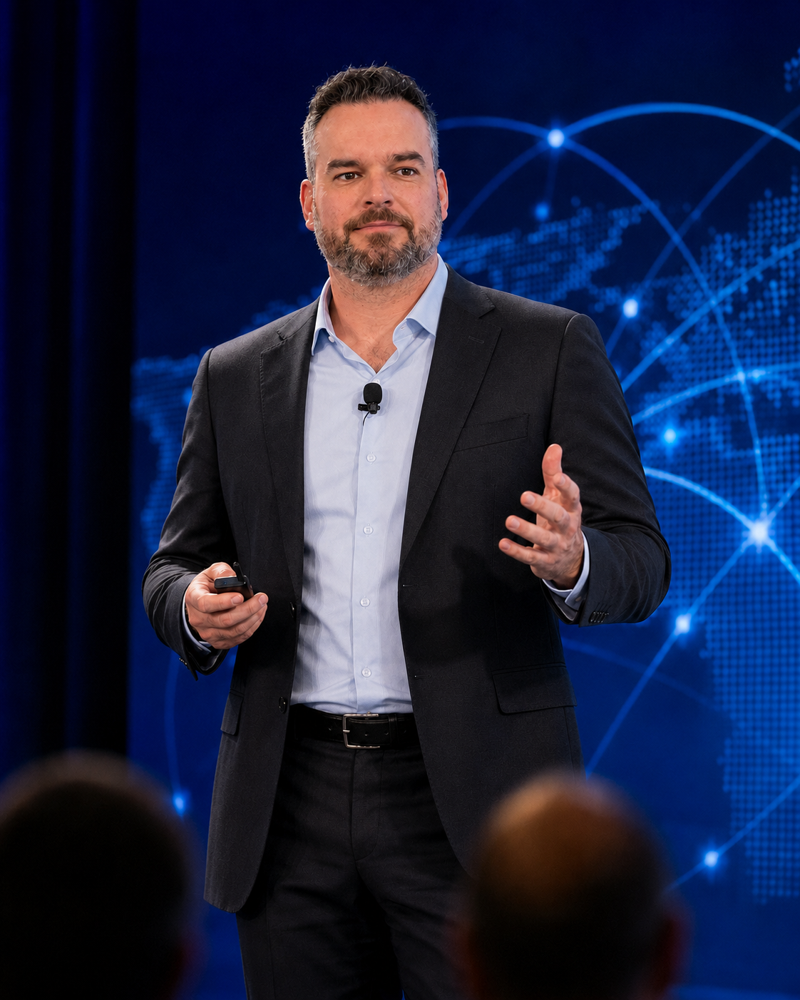
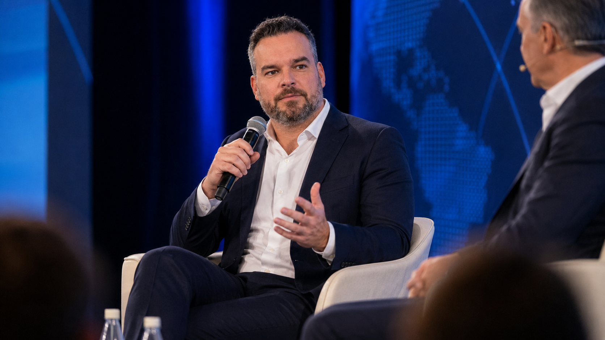
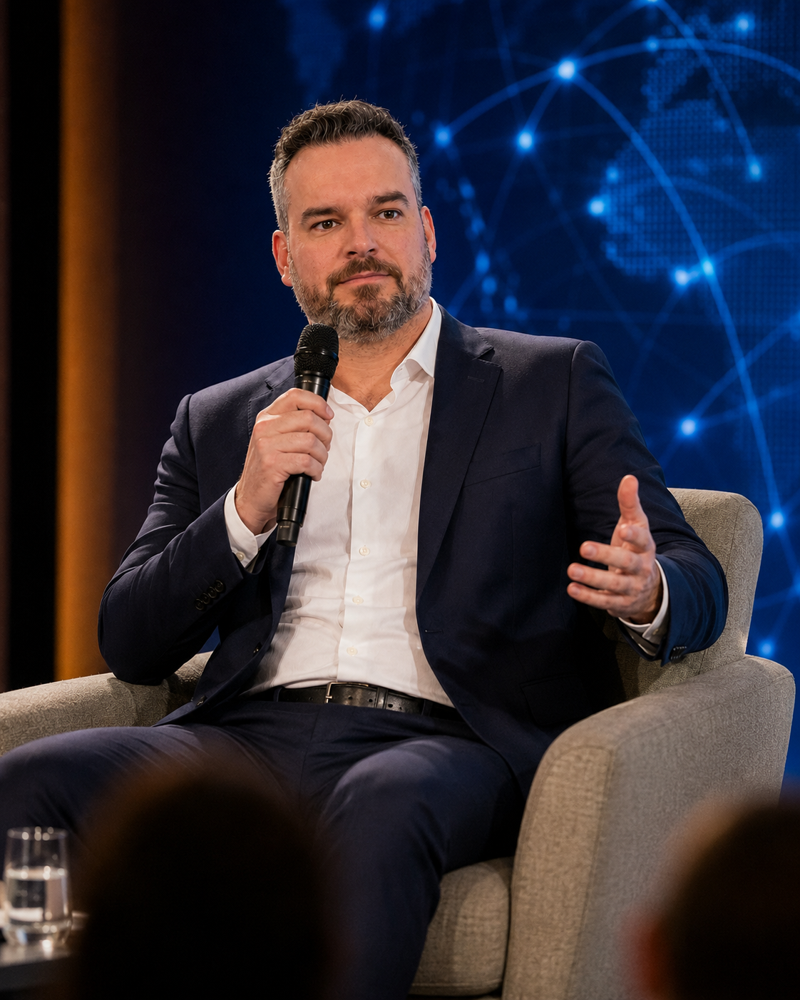

Boards & executives
Risk appetite, governance, transformation, accountability and the strategic role of compliance.
Keynotes, fireside conversations, panels, podcasts, board discussions and private executive sessions.



The event images above are AI-created visual representations based on approved reference photographs; they are not documentary photographs of specific appearances.
Why efficiency became the dominant compliance objective—and why adaptability is now the more important measure.
How connected intelligence, continuous governance and human judgment fit together.
What agents will automate, what they will augment and where human accountability remains essential.
Building consistent infrastructure while preserving local regulatory interpretation.
Decision-making, loneliness, influence and the shift from having answers to building leaders.
Sessions can be made more strategic, technical or personal depending on the event.
Risk appetite, governance, transformation, accountability and the strategic role of compliance.
Model management, KYC, sanctions, transaction monitoring, operations and emerging typologies.
Building systems with compliance professionals, explainability, responsible AI and customer experience.